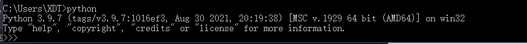
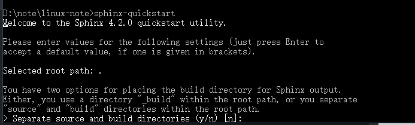
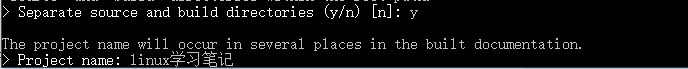
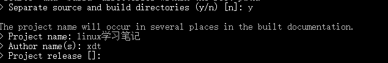
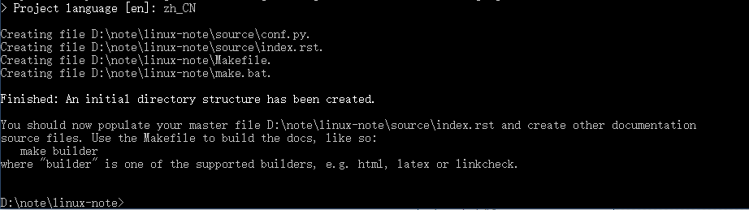
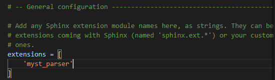
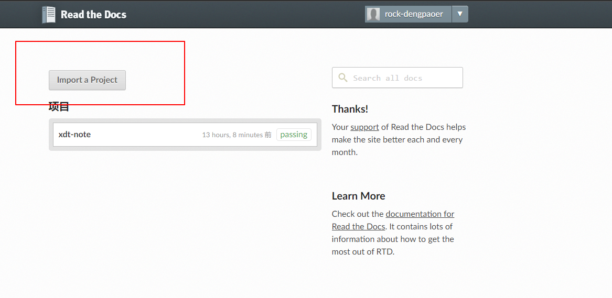
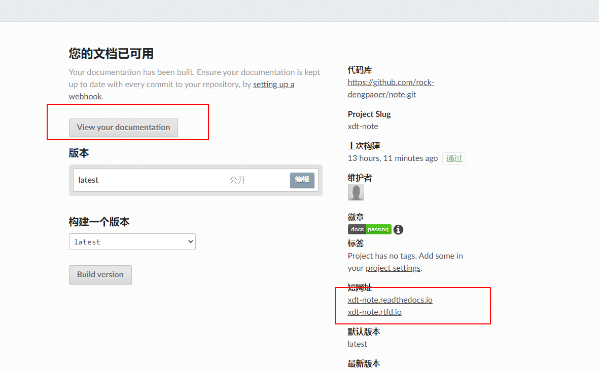
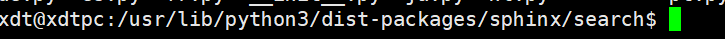

sphinx教程
安装python
以windos为例
我选择安装的是python3.9
链接为 python
下载windws安装程序（64）位，为所有用户安装，将环境变量添加到系统里。
等待安装完成，结束之后，打开cmd，输入python 查看是否正常运行。
正常运行python:
创建一个项目
转到一个空的文件夹目录下。
然后输入命令
sphinx-quickstart
是否需要创建隔离的文件夹，默认为不需要:
我选择的是需要，就输入y就行了。
然后是项目名称
名称:
然后作者姓名，版本号（版本号可以不填，直接回车）。

设置语言为中文:
配置结束
更多配置都在conf.py中。
使用Markdown文件
安装 Markdown 解析器 MyST-Parser:
pip install --upgrade myst-parser
把 myst_parser 添加到列表 已配置的扩展 中:
extensions = ['myst_parser']

如果要使用不以“.md”为扩展名的 Markdown 文件，请调整 source_suffix 变量。下面的示例将配置 Sphinx 把所有扩展名为“.md”和“.txt”的文件解析为 Markdown
source_suffix = {
'.rst': 'restructuredtext',
'.txt': 'markdown',
'.md': 'markdown',
}
网站托管
在read the docs注册一个账号。
如果与github账号就可以不用注册，直接关联
然后github新建一个公共的仓库，然后将项目里的文件全同步到仓库里。
在read the docs网站上导入工程。

等待构建完成。
网址:
这些网址都可以打开网页。
服务器地址为美国，访问可能会比较慢。同时免费版会有一些广告
gitee还没有使用，后续再写。
更换域名还没有测试，后续再搞。
中文搜索问题
pip安装jieba，然后在conf.py里增加配置，再重新编译生成文档。
pip安装的时候可能会超时，更换清华源之后，顺利安装。
这是教程链接
这是windows的解决方案，但在linux下就失效了
linux下，使用一个支持简体中文搜索的插件来解决问题。
在我的服务器中，Sphinx的.+